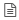

Configuring an indicator¶
Table of Contents
The configuration of an indicator is using a form containing 6 tabs. The first two tabs are automatically loaded for you to initialize the indicator, ie the creation of the data source defined as the joining of a territory and a third data source (file, table or SQL query). It is not possible to pass the following tabs before the indicator initialization step is over.
Warning
The tabs are loaded one by one in the configuration and/or load information. Please wait until all active tabs are loaded before continuing.
Icon |
Description | Action |
 |
Metadata |
Configuration the indicator metadata |
 |
Data |
Configuration the indicator data |
 |
Symbology |
Configuration the indicator of symbology |
 |
Table | Configuration of the indicator table |
 |
Graph |
Configuration the indicator chart |
|  | Report |
Setting the indicator report |
{kind=link}
Initialization of the indicator¶
As stated in the introduction to this section, it is imperative to properly initialize the indicator through the first two settings tabs of an indicator. We present in this specific section in these two tabs individuals. The tabs can be used once the initialization successful.
Metadata¶
The first step in configuring an indicator involves entering its metadata. The Metadata tab is loaded by default initialization of indicators creation module, its appearance is shown in the screenshot below. Please complete all information listed below.

Indicator name¶
The name of the indicator is a string naming the indicator. This value is used in the public interface and are advised to use a short and meaningful name.
Description of the indicator¶
The description of the indicator is a string describing the indicator. The appearance of the text can be set using the editor “richtext” proposed. It is used in the public interface.
Note
For more information about using the editor, please refer to its user guide <http://docs.cksource.com/CKEditor_3.x/Users_Guide>.
Record indicator¶
- Record the indicator is an optional parameter. It can be of type:
A URL to a document (html, pdf ...) Online
A .pdf, .doc, .odt or other imported through the proposed addition of file utility.
Note
If the indicator sheet is blank, one that will not be accessible from the public interface.
Sources indicator¶
The sources of the indicator inform the rights and/or license data used to create the indicator. It is generally specify the copyright or the conditions of use related to the data provider.
Keywords Indicator¶
The keywords of the indicators are a series of words describing the indicator, separated by commas, as shown in the example below.
monindicateur,xls,wps,mapmint
Group(s) of users¶
The user groups selected in the list of groups will be allowed to consult the indicator published after connection. Hold down the “CTRL” button on your keyboard to select multiple.
Theme(s) of the indicator¶
The indicator will be assigned to(x) theme(s) selected in the corresponding list.
Once all metadata is entered, click the “Save” button.
Note
The configuration metadata can be changed at any time before or after the publication of the indicator. Use the “Save” button to save your changes.
Data¶
The second step of initializing a flag is the most important, it is to select statistical data for the calculation of the indicator. Go to the “Data” tab and select one of three types of available data (file, table or SQL query ) using the radio buttons provided for this purpose.
File¶
In the case of a file, please click the Add files utility and select a data file on your computer. Click the “Import” button.
Warning
The selected file on your computer must be .csv, .xls or .xlsx, and contain at least one column with information enabling a joint with a territory (postal codes, insee codes, identifiers, name ...).
Warning
In the case of using .xlsx or .xls files, it is possible that the spreadsheet contains multiple pages. All these pages will be displayed in a scroll able list allowing you to select the page you want to use to boot your indicator.
If your import file was successful, a table appears below the add form. Otherwise, a red error message appears at the top of your screen (check your file and try again).
Make sure the column for performing the join either the first position in the table, as shown in the example below. You can re-ordered the columns in the data table of the imported file by clicking on the title of a table column and then, while keeping your left mouse button, move the mouse cursor from left to right the columns should then be re-ordered.

Note
It is possible to move a column by holding your cursor over the title of the column and moving the drag and drop to the desired position.
Once the file is loaded and the geographical position first column, click the “Confirm” button.
A green message confirms the creation of the indicator. Otherwise a red message indicates an error when creating the indicator (check your file and try again).
Table¶
In the case of a table, you first select an area and an attribute field (the second drop-down list is updated automatically according to the choice made in the first list).
Then select one of the schemes available in the basic indicators data and the table you want to use for calculating the indicator.
Click the “Confirm” button. This causes the display for the result of the query as a table below the form.
SQL query¶
In the case of a SQL query, you first select an area and an attribute field (the second drop-down list is updated automatically according to the choice made in the first list).
Then select a connection to a database. Corresponding the drop-down list active connections created in the Data Management Module.
Then write your SQL query in the text box provided for this purpose and click the “Test” button. If your query is correct, a green success message is displayed temporarily on top of your screen and you can click on the “Confirm” button. If your query is incorrect, a red error message appears at the top of your screen. Please review the request and click “Test” again.
Note
Many tutorials on the SQL language are available on the internet, especially right here.
Style¶
The third setup tab of an indicator is to define his style, that is, its mode of mapping. Click on the icon “Style” from the tab bar and enter the parameters described below.
Variable
The indicator variable is the attribute field that will be used to calculate the indicator. Please select the desired variable from the first drop of the symbology tab.
Formula
The formula of the indicator specifies how the variable is used in the calculation of the indicator.
[_X_] Allows the use of variable gross manner.
The value [_X_] can also be used in a SQL query. For example it is possible to change the type of data, which is always a default character string to an integer value using the value : [_X_]::int
Classification
Then select a method of statistical classification for the symbology of the indicator. As in the Map creation module, , four types of classifications are proposed:
| Type | |
Unique value |
|
Graduated symbol |
|
Continuous color |
In the case of a type classification unique value each quantitative value of the variable (an attribute field) is defined by a class. After classification, the user gets as many classes that there’s different values in the attribute field.
In the case of a type of classification graduated symbols , the quantitative values of the variable are grouped into a number of ordered classes. Inside a class, all features are drawn with the same symbol or the same color.
In the case of a type of classification continues color , quantitative values of the variable are grouped into a number of classes and a color gradient. Inside a class, all features are drawn with the same symbol or the same color.
Discretization
In the case of a type of classification graduated symbols, you also have the option of choosing a discretization method for the variable in the following list:
| Type | Definition |
| equal | Equal intervals |
| jenks | Natural breaks |
| quantiles | Quantile |
| kmeans | K-means |
| fisher | Fisher kernel |
Note
Using a discretization method affects the classification and thus the representation of the indicator on the map and in the legend.
Number of classes
In all cases except one type of classification unique value , then please specify the number of classes for classification in the text box provided for this purpose.
Minimum and maximum color
Then select a minimum color and maximum color with the color selectors, an example is given below.

You can either use your mouse to the left side or directly enter a hexadecimal or RGB color code in the right side. Once this is done, please click the icon at the bottom right of the window to confirm.
Note
Il est conseillé d’utiliser une couleur claire pour la valeur min et une couleur foncée pour la valeur max
Table of classes
After all filled settings, click the “Classify” button. This causes the calculation of the symbology of the indicator and displays the result classification in the table of classes below the form.
{kind=link}
Each class can then be changed manually by clicking on the corresponding line in the table of classes. This causes the appearance the editing of a class form as shown below.
{kind=link}
The name , the limit values and the different filling options and border can be changed. Click the “Apply” button at the bottom of the window to save the changes. This results in changing the Class in the table of classes.
At any time following the classification, you can preview the card by accessing the indicator tab me “Preview”. This opens a localized map on your meter with your indicator to allow you to appreciate the quality of the style you define the indicator.
Table¶
The fourth indicator settings tab is to define how the table will be presented to the end user for the published application. You must complete the parameters described below.
Title of the table
Enter a title for the first indicator table in the text box provided for this purpose at the top of the form.
Configuration of the table
Then click on the icon of setting the table at the top right of the table. This causes the opening of the configuration window, shown below.
{kind=link}
Field |
Definition |
| A | Display the column |
| R | Permit research using this column |
| Pos | Column position in the table |
| Column | As the default column |
Label |
Column title |
Value |
Column value |
Width |
Width of the column in pixels |
Warning
In case ve not wish to display a column, please delete all the information in the corresponding parameter line.
After setting the table done, click the “Validate” button at the bottom of the window. The backup setting indicated by a green strip at the top of the screen.
Finally, click the “Save” button to save all the information of the Table tab.
Warning
It is necessary to specify a title and parameter the table to make the table display in the public interface.
Graph¶
The fifth tab setting of the indicator is to define the property of the chart. You must complete the settings described in the subsections below. An illustration of displaying the form is provided below.

Chart Title
Specify a title for the first graph of the indicator in the text box provided for this purpose at the top of the form.
Chart Type
- Then select the type of graphic:
Histogram (or “bar chart”)
pie chart (or “pie”)
Note
A histogram or pie chart will be displayed in the public interface according to your choice
Label the x-axis
The abscissa label matches the title of the x-axis of the graph that will be used in the public interface. Enter one or more keywords in the text box provided for this purpose.
Variable Easting
Then select the variable to be represented on the x-axis, ie one of the attribute fields available in the drop-down list. This is mostly a field describing the territory (municipalities or departments, for example).
Label of ordinate
The ordinate the label matches the title of the ordinate of the graph that will be used in the public interface. Enter one or more keywords in the text box provided for this purpose.
Variable of ordinate
Then Select the variable to use for the y-axis, ie one of the attribute fields available in the drop-down list. This is generally the variable of the indicator.
Formula of ordinate
As for the configuration of the symbology of the indicator, it is possible to write a SQL query to set the y-axis of the graph. The default value of the formula is [_X_], also used in a more complex query.
Note
Many tutorials on SQL are available online, especially here.
Hovering value
Finally, it is also possible to set the value hovering columns of the histogram or shares of the pie chart. This value is displayed when the user hovers over them with his slider.
If this field is left blank, the system will display the value of the x-axis and the value [_X_] default for each object on the chart.
Save and preview
After all informed chart settings, click the “Save” button. The configuration backup is stipulated in a green band at the top of the screen.
You also have the ability to preview the chart by accessing the “Preview” tab. This displays the graph as it will be presented in the public interface.
Report¶
The latest mandatory tab before the publication of an indicator corresponds to the setting of the report, it is shown in the below desirous. This is a document to be used as a template to generate a PDF file that the user can set the selections via geographic entities then generate from the viewer of the public interface indicators.
Document Template
A report is based on a model of generic document LibreOffice (.odt) . It may contain the elements listed in the next section (and / or others) which will be updated depending on the indicator and the selection of the end user.
Note
The odt document can contain as many desired fields. His presentation can also be modified using LibreOffice style options.
Note
For more information on using LibreOffice, please see its documentation
Warning
The name of the odt document elements must match the value specified in the “Field Name” setting of table presented below.
Once your prepared LibreOffice document template, please send it to the server using the upload form provided for this purpose.
Setting the report
After adding the document template, a hyperlink is displayed below the form, allowing you to download it later.
Note
The parameter table shows as many lines as objects in the document odt
Then proceed to the setting of each of the basic objects of the report listed below:
Field |
Definition |
Type | Value to specify |
| Table | Displays the indicator table |
Display table |
Any |
Compared |
Displays the table of comparison of territories |
Display table |
SQL query |
Title |
Displays the report title |
Default display | Character string or SQL |
| Description | Displays the description of the indicator |
Default display | Character string or default description |
| Location | Displays the location map (overview) |
Location Map | Any |
| Map | Displays the map of the indicator |
Main image map |
Any |
| Diag | Displays the graph of the indicator |
Graph display | Any |
| Classes | Displays the legend class Indicator |
Graph display | Any |
| Sources | Displays the indicator data sources |
Index sources | String or sources default |
Once all fields are completed, click the “Save” button to save the settings.
Publish an indicator¶
In the same way as for maps, an indicator is accessible from the public interface, it is necessary that it be published. To do this, use the button “Publish” at the top right of the settings form to publish the indicator, it will be available automatically the next time you load the home page of your instance MapMint.
Unpublish an indicator¶
In case you want an indicator no longer accessible, you saves the ability to unpublished. By doing this, no data for the indicator will be deleted, so you can use them as always layers as you do with standard features that other data source.
To unpublished an indicator, click the button “Unpublish” top right setting form of an indicator.